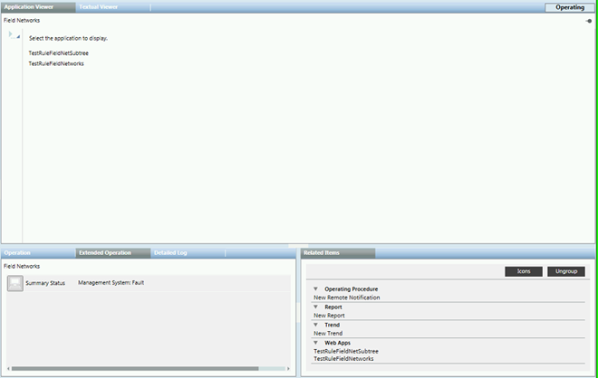

Application Viewer Workspace

Application Viewer Toolbar
The Application Viewer toolbar allows you to work with fixed web application links.
Icon | Name | Description |
Show all | Select external web application to display. The menu displays a maximum of 10 items in the list. | |
| Set Execution Credentials | Set the execution policy for a script. |
| Clear Execution Credentials | Clear the execution credentials. |
| Email Settings | Configure the email template settings to send a fixed link report. |
| Reset Zoom | Sets the dashboard aspect zoom to 100 percent. |